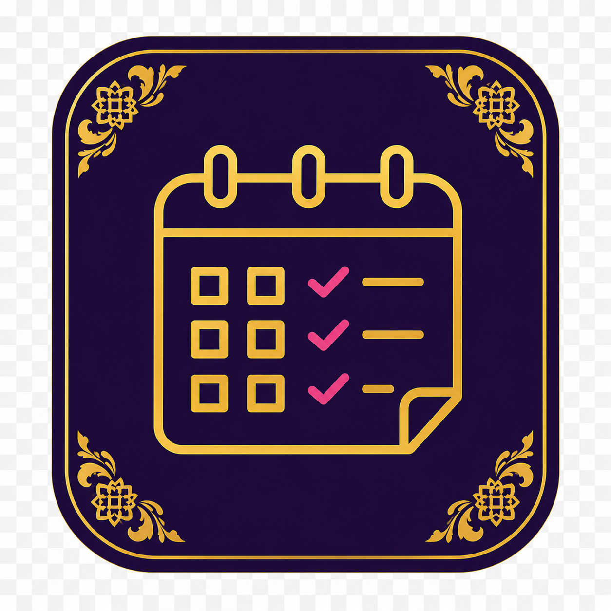
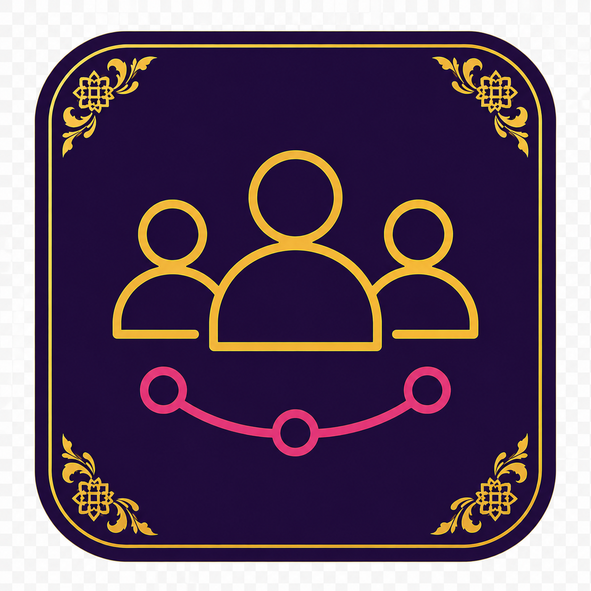
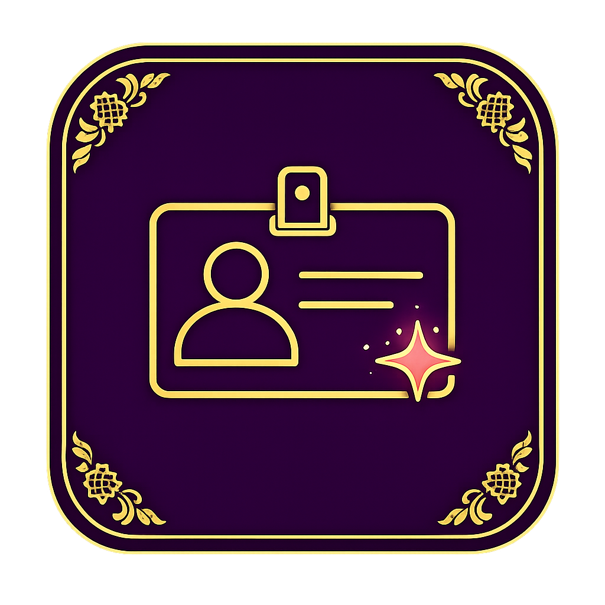
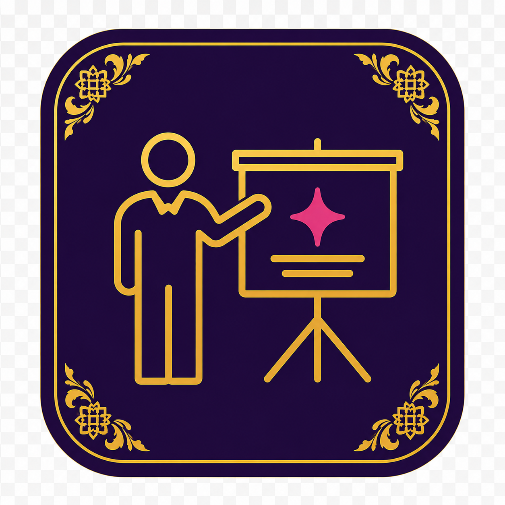
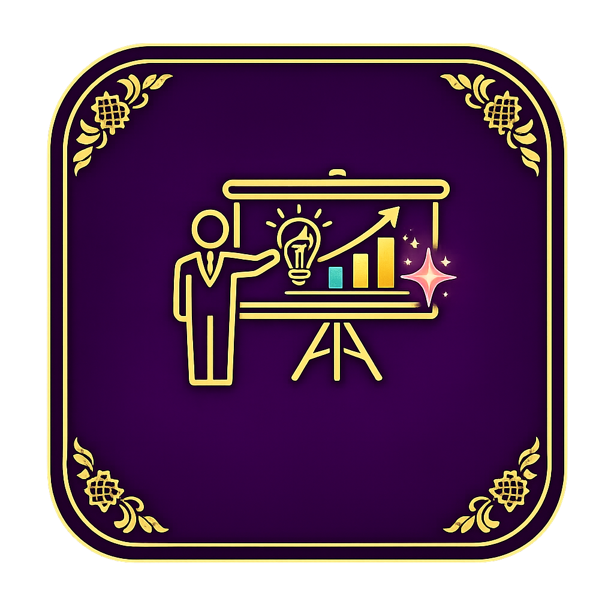
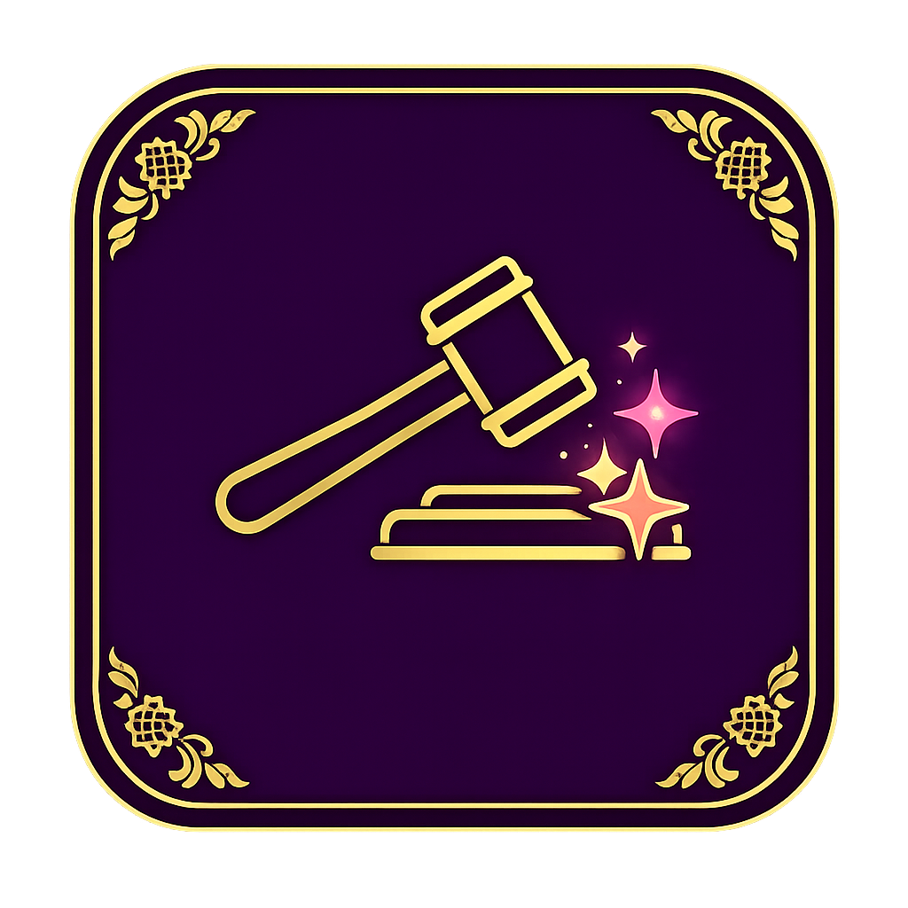

CAMP21:Synergising Literacies 2026
Inspired by Culture • Driven by Ideas • Powered by AI
A future-ready cultural innovation experience where Malaysian heritage, Design Thinking and AI work together to support students, trainers, judges and organisers.
 AI + HeritageKompleks Kraf KL
AI + HeritageKompleks Kraf KLModern literacy, cultural intelligence and AI-powered problem solving.
Camp21 is built as a student-first journey. Participants explore heritage, define meaningful challenges, ideate with AI support, prototype solutions, test with feedback and present through a final pitch and gallery walk.
Read the programme overview →
5 phases. One clear operating flow.
Every team moves through the same Design Thinking pathway, with trainers guiding outputs and readiness at each checkpoint.

Built for students, trainers, judges and organisers.

Tentative / Programme
Daily mission, session flow, venue and timing.

Progress Tracker
Monitor group phase completion and support needs.

Participant Hub
Checklist, SMART DT App and template outputs.

Trainer Briefing
Phase leaders, trainer duties and intervention points.

Pitching
Final story structure and gallery walk readiness.

Judge Portal
Rubric, scoring focus and judging logistics.
10 teams. 6 members each. 60 students.
Each group brings together students from different polytechnics and community colleges for a cross-institution collaboration experience.
T01–T16 aligned to the 5 DT phases.
Phase 01 · Empathise
T01 Interview Guide & Notes
T02 Empathy Map
T03 Persona Card
T04 Needs Summary
Phase 02 · Define
T05 POV Statement
T06 HMW Question
Phase 03 · Ideate
T07 Brainstorming
T08 SCAMPER
T09 Idea Matrix
T10 Final Idea
Phase 04 · Prototype
T11 Prototype Plan
T12 Version Log
T13 Evidence Photos
Phase 05 · Test & Pitch
T14 Feedback Form
T15 Improvement Plan
T16 Reflection & Pitch Prep